和 AI 一起旅行
這個地方，
是我問出來的。
照片：星野集團 奈良監獄博物館
我沒有問「奈良有什麼好玩」。
我只說了我要什麼、我已經有什麼——剩下的交集，就是它。
新工具帶來新選擇。
依旅程時序排：出發前 → 排行程 → 現場變動。
我人在 ，時間是 到 ，已經訂了 ，請在這個框架裡排。
Budj Bim 原住民鰻魚養殖系統
Cumalıkızık 奧斯曼村莊
一日往返可到的世界遺產有哪些？哪些是正式登錄、哪些不是？
有個主軸，就可以幫助自己做篩選。
我對 不熟，先簡介這座城市，我再告訴你需求。
熱門清單，會變成「剩下的」清單。
不講去過哪裡，它只會一直推熱門景點。
我已經去過 、 ，請排除；其中 我很喜歡。
同一組景點，換一個規則就是另一份行程。
用免費日／營業時間／地理位置／票價當規則，重排我的行程。
出發前的行程只是假設，旅途中的你才是真實資料。
我現在在 、 點，帶著 ，狀態是 ；
接下來一定要 。原本的 還要不要去？
票價 · 開館時間 · 班次
人在現場所獲得的資訊，超過一切。
國定假日等不到公車，看看有沒有人一起等；真的遇到困難，就問問服務台；
車票很怕買錯，就買最貴的。
有洞見的問答，都從「我看到一個不對勁的細節」開始。
AI 負責補知識，幫助我有更寬廣的思考空間。
「女人拿著房子象徵什麼」
→ 讀懂一個符號，整間展廳都讀得懂
「為什麼這個罐子立不起來」
→ 違和感就是好奇心的癢處
「打牌女性為什麼裸胸」
→ 從可能性中選出自己的觀點
「有哇沙米味道的東西」
→ 不知道名字也能問到
「佛教是否也有如此的狀況」
→ 測試自己的論點
「為什麼把他們放在一起」
→ 看見館藏背後的國家史
「1944 年發生了什麼」
→ 從一個東西鑽進一個國家
「為什麼留下這麼多文字」
→ 從「是什麼」升級到「為什麼」
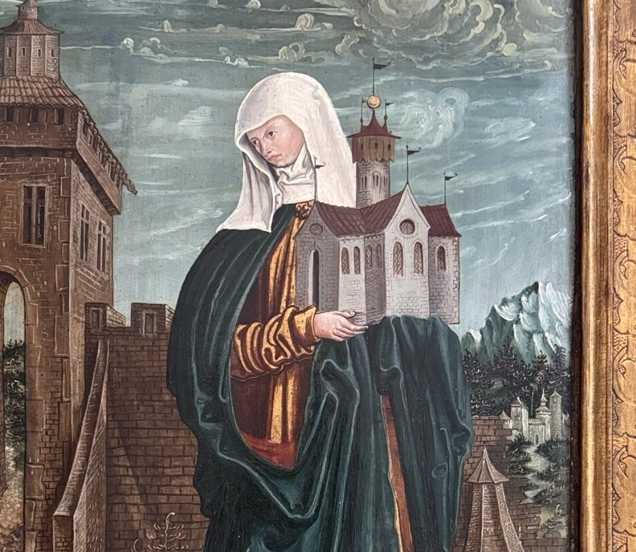
我看到一個女人，手上捧著一棟房子。
而且不只這一幅。
「很多作品都有」才是關鍵——先發現重複，再問意義。
讀懂一個符號，整間展廳就都讀得懂了。
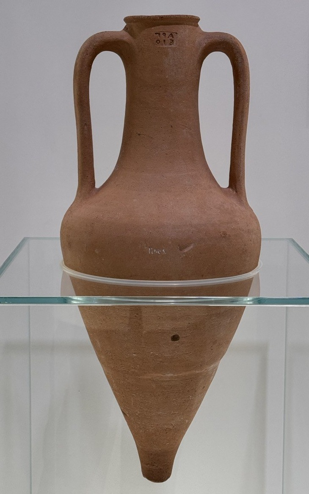
它立不起來。底部是尖的，
放在平面上一定倒。
先猜猜看——為什麼要做成這樣？
捕捉到差異與違和感——那些打破常規的瞬間，正是好奇心的癢處。
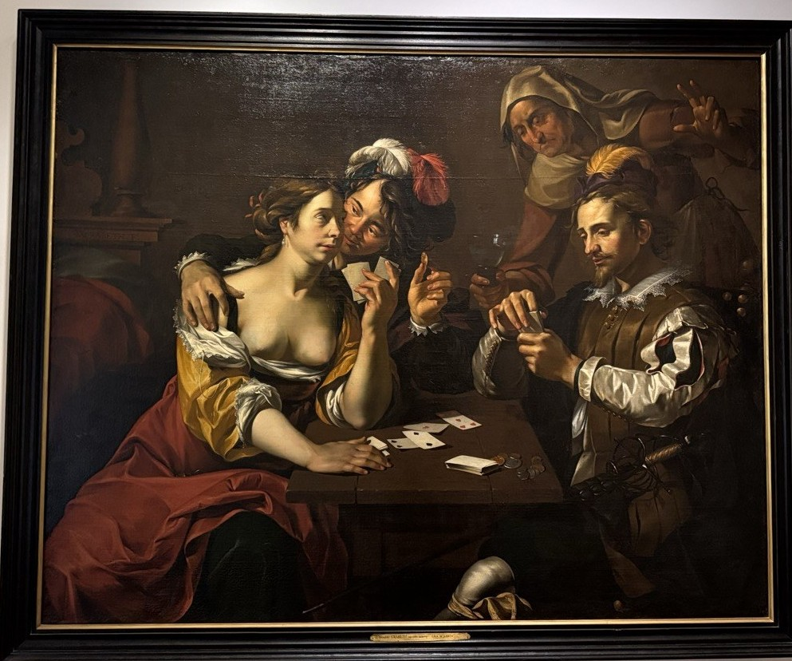
一桌打牌的人，其中一位女性裸露胸部
AI 負責攤開可能性，收斂是我的工作。
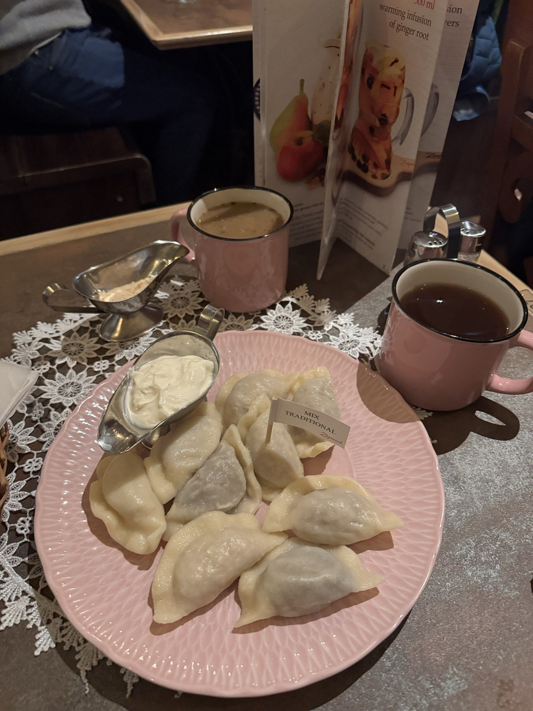
桌上這些，我一個都叫不出名字
照片拍得到那坨白白的東西，但拍不出味道。把味道講出來，它就查得到。
真正讓論點經得起考驗的是下一問：
把同一個批評套到另一個體系（基督教 → 佛教），看它是不是只針對單一對象。
我再追問「你從哪裡得到這個結論？」
它將原先現場翻拍的展板內容重現出來，讓我做回顧和判斷。
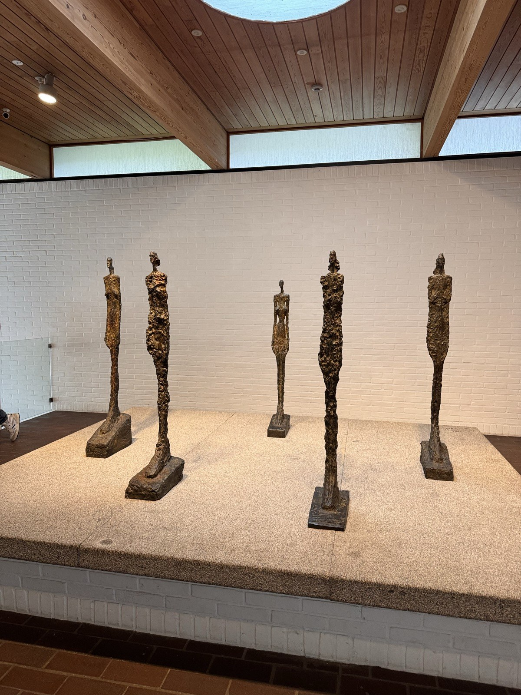
丹麥 Louisiana，一整排 Giacometti 的瘦長人像。
可是這場展，掛的是他和 Bourgeois 的名字。
我原本以為那是偷懶的策展。問完才知道，那個不舒服本身就是策展要的效果。
同樣問「這件為什麼在這裡」，在華沙問出的是 Faras 壁畫背後的國家史，不是藝術史。
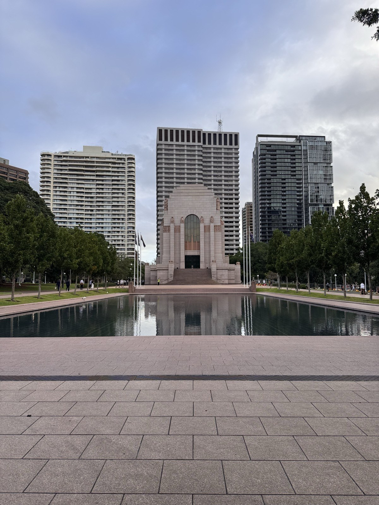
雪梨海德公園，一池靜水。
水面對著的是澳紐軍團戰爭紀念館。
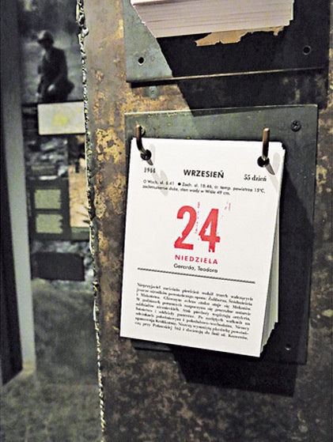
一本停在 1944 年 9 月 24 日的日曆。
排行程的時候，我只是想知道華沙起義博物館在展什麼。
一條鏈大約 4–6 問，從一個物件走到一個國家的自我認同。
華沙那條還把我帶去了共產博物館——第三章那三件事，是這條鏈問出來的。
第一次問的是「這是什麼」。
一個月後再遇到，問的是「她為什麼這樣做」。
中間沒有人教我——是那 20 件逐件提問把問題墊高了。
| 案例 | 發生什麼 | 類型 |
|---|---|---|
| 托倫舊城 | AI 先說托倫「幾百年幾乎未被破壞」；我說「非常新根本不像古城」後，它改口成「二戰後重建」。托倫其實是少數二戰幾乎未受損的波蘭古城 | 順從 |
| Malczewski《Dirke》 | AI 把故事講成拉伊俄斯、安提戈涅、赫拉克勒斯。希臘神話裡把 Dirce 綁上公牛的是安提俄帕的兩個兒子 | 捏造 |
| 關西世界遺產 | 我問「總共有幾個」，AI 答 9 處，列出來只有 7 項，還把不是世界遺產的吉備津神社算進去 | 硬湊 |
「正式登錄與非正式分開列」，並且自己數一次。
「托倫二戰有沒有被炸過？」
比「這裡很新」更難被順著回答。
神話、尺寸、年份，一律以現場說明牌為準。
因為是 AI，有時可能會出錯。
前面兩章，是我怎麼問 AI。
這一章是在當下才能有的——
三個我剛好注意到的東西，和兩位我剛好遇到的人。
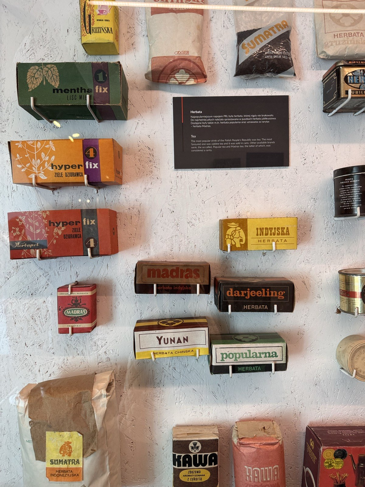
我本來只是覺得這些顏色和字體很好看。
條碼是為了零售掃描與庫存管理而生的，國營商店沒有這套系統。
更有趣的是——有幾包的價格是直接印在包裝上的。
因為價格是國家訂的，不會變。
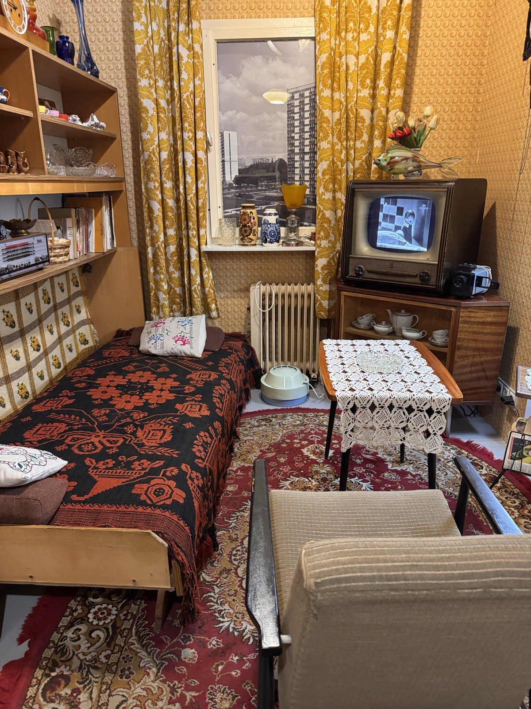
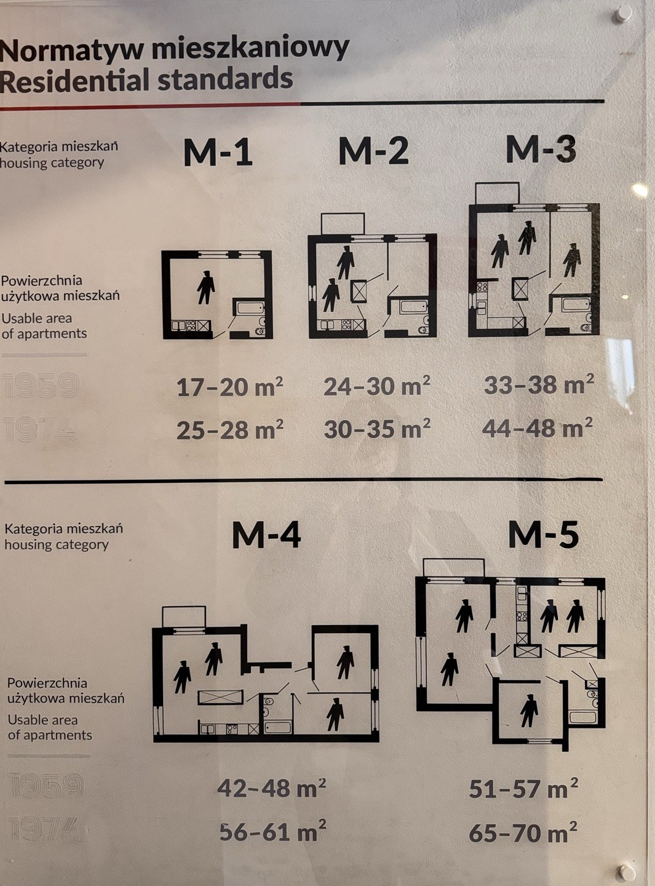
Normatyw mieszkaniowy／Residential standards
幾天後，在共產博物館，我看到這張《住宅標準》。
M-1 到 M-5，國家規定每一種家庭能分到幾平方米。
1959 年的 M-3 是 33–38 m²，1974 年才放寬到 44–48 m²。
在那個坪數裡，客廳根本排不進去。
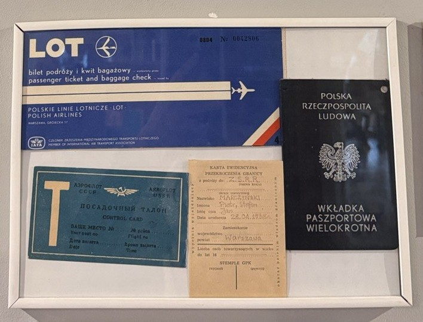
我這趟剛好就是搭 LOT 波蘭航空飛進來的。
那隻鶴從 1929 年用到現在。
熬過了戰爭、共產、民主化，標誌沒有換過。
這件事，只有在我剛好搭了它的那天才有感覺。
這一段，
我完全沒有查資料。
唯一的準備，是知道茶室要脫鞋上榻榻米，
所以在奈良先買了一雙分趾襪。
我把手放在茶碗前低頭行禮，看著老師跪坐著、用雙手撐起身體移動。
整個茶室非常莊嚴、非常冷靜。
喝到最後一口要發出吸吮聲，像吃拉麵一樣，想把最後一點喝完。
這麼莊嚴的儀式，原來也很可愛——嚴肅，是慢慢變成平靜的。
我們習慣的服務是越來越懂你，AI 也是。
茶室卻刻意每一次都從零開始為你準備。他不是店家，是主人。
她平常在秋田工作，這次特地來京都。
現在她坦然告訴客人自己是台灣人，曾經的阻礙，反而成了聊天的開始。
AI 介紹得了藝伎文化，但它遇不到她。
她教我們玩宴席遊戲虎拳，邊唱邊跳，有點像剪刀石頭布。
我原本以為，藝伎的核心是表演。
最重要的不是台前那一支舞，是怎麼接住當下這一桌。
因為人與人的相遇無法被複製，所以也永遠學不完。
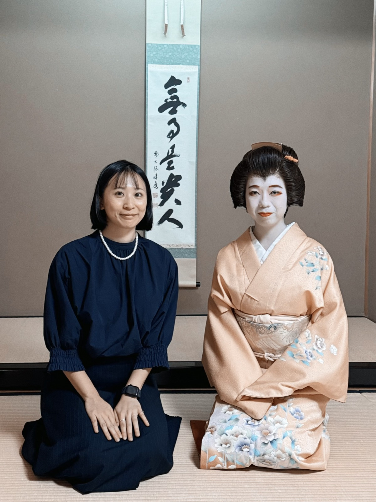
旅途中我一直在想：這些沒有產值的事，到底帶給我什麼？
我沒有答案，但我看見了別人選擇人生的方式。
茶道老師、藝伎老師，還有廣島燒店的老闆、背包客棧遇到的旅人——
這些連結，只有站在現場才會發生。
一路上我大量用 AI 查資料、問問題，這其實是一種反覆的分辨：
哪些東西資料給得了，哪些給不了。
有些感動，我到現在還沒辦法整理成一句話。也許這就是它和資料不一樣的地方。
品味不是知道得多，
是發現我的提問是補足知識，還是發展觀點。
你問了什麼，
決定你看到什麼。
下一趟旅行，試著在現場多問一句。